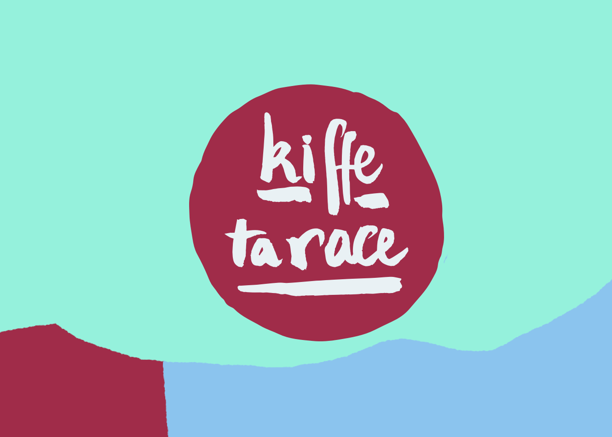

Identité visuelle du podcast Kiffe ta race,
Binge Audio, 2019.
« C’est dans la perception de tous que les races se construisent et entrent dans le champ de la réalité sociale. Si bien que les interactions entre êtres humains, lorsqu’elles sont orientées par cette idée, se construisent en fonction de ces races pourtant imaginaires. La prise en considération de la perception sociale des races est par conséquences nécessaire aux sciences sociales pour lesquelles les "races"sont des catégories sociales effectives. C’est le racisme qui fait exister les races et non l’inverse ».— Rokhaya Diallo
Dans le podcast Kiffe ta race, Rokhaya Diallo et Grace Ly parlent du racisme qu'elles vivent quotidiennement et intimement.